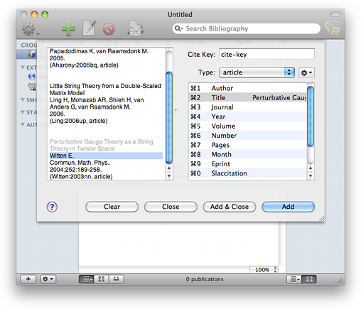

Adding References From Text Sources Adding References From Text Sources
Adding References From Text Sources Adding References From Text Sources
If you have a source of references that isn't in a structured form, you can use the "Add New Publications from Clipboard" menu item in the "Publication" menu (or the key shortcut ⌥⌘L ) to open a sheet that lets you add references by selecting text and assigning that text to fields in a new reference. You can also choose the "Add New Publications from File" menu item (key shortcut ⇧⌘L ) to add references from an arbitrary text file, or the "Add New Publications from Web" menu item (key shortcut ⌘L ), to add publactions from a website.
If the clipboard or the file contains formatted text that BibDesk can understand, such as BibTeX, RIS, Medline (PubMed), MARC, JSTOR, and ISI Web of Science formatted text, Bibdesk will parse the text and the new references are immediately added to the database instead of openingthe sheet to do it by hand.
Examples of reference sources that this would be convenient for are emails, conference proceedings web sites, and the text from a list of citations at the end of a publication.
When the sheet opens, it loads the data on the clipboard into the left-hand side of the sheet. If the last thing you've copied was text, it will show that text. If the text is a URL, it will instead load that URL and display the web page. If you know you want to use a web page that is not on the clipboard, you can use the "Add New Publication from Web" menu item instead.
The "Open" button gives you the option to choose other sources of information. If the sheet is displaying a website, there are navigation controls, including back, forward, and a button for reload and stop.
Using the contextual menu on the web page, you can bookmark pages to come back to at a later time, or save the URL of a link or the page itself as the URL or Local-Url fields for the current publication.
The right hand side is a table representation of a publication. You can choose its type and it will load the appropriate field names to edit. As you add data, it will update the citation key with the current suggested citation key according to the format set in the Cite Key Preferences. When you are done editing, choose "Add" to add the current item to the document, then "Close" when you are done adding.
The sheet is designed to make this common task more efficient. Select the text from the source on the left, and you can drag or copy and paste into the table on the right to fill in the publication's information. Edit and make any other changes you want by double-clicking on the rightmost column of the table.
You can make adding data faster by double-clicking the name of the field you want the selected text to fill and it will be added for you. You can also use the key shortcuts ⌘0 through ⌘9 or ⌥⌘0 through ⌥⌘9 to copy the selected text over to the corresponding field. If you hold down the Control key at the same time, the selected text will be appended to the field value. Alternatively, you can type ⌘= to temporarily move to the table to select a field to fill. After that, start typing the field name or use the arrow keys to find the field and hit the Enter key to fill it and return to what you were doing. Use the Tab or Escape key to just go back without filling the field.